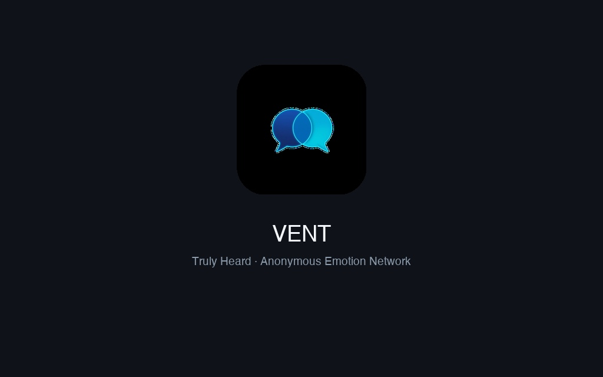
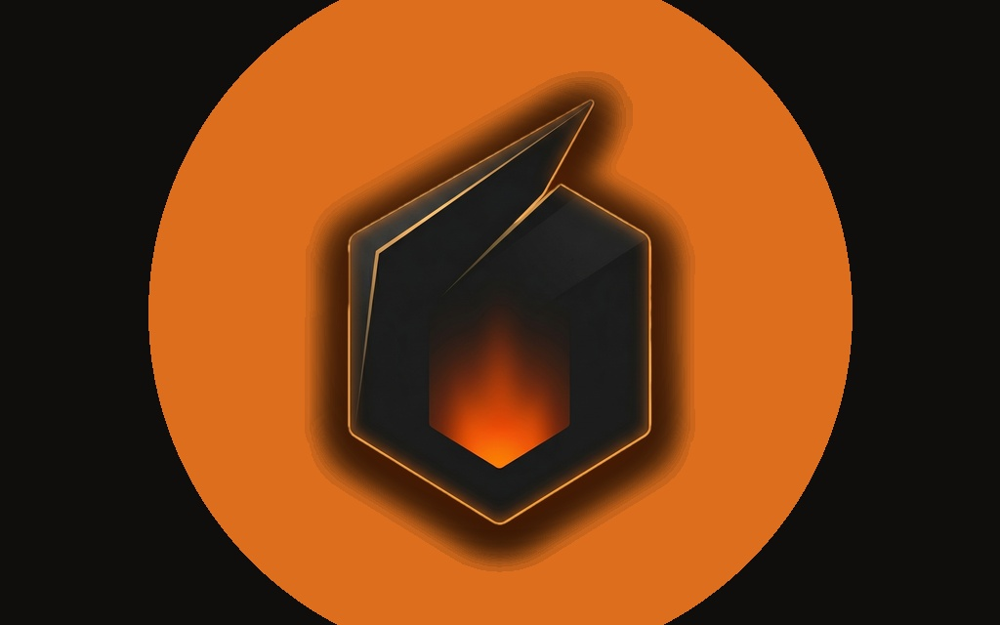
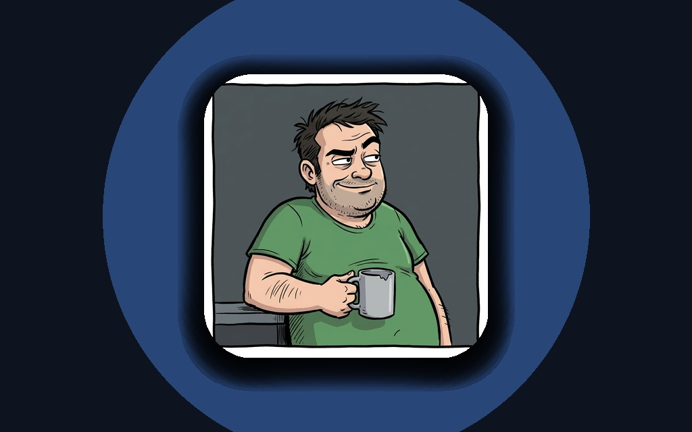
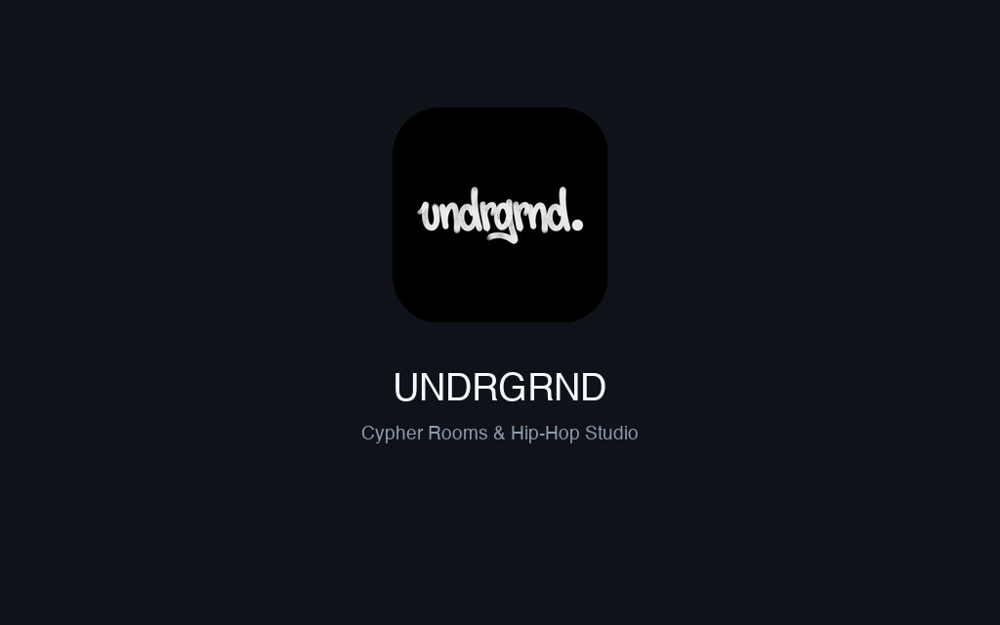
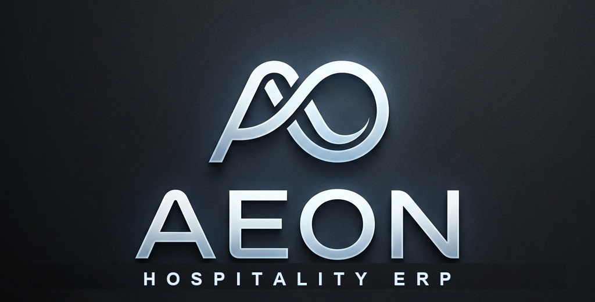
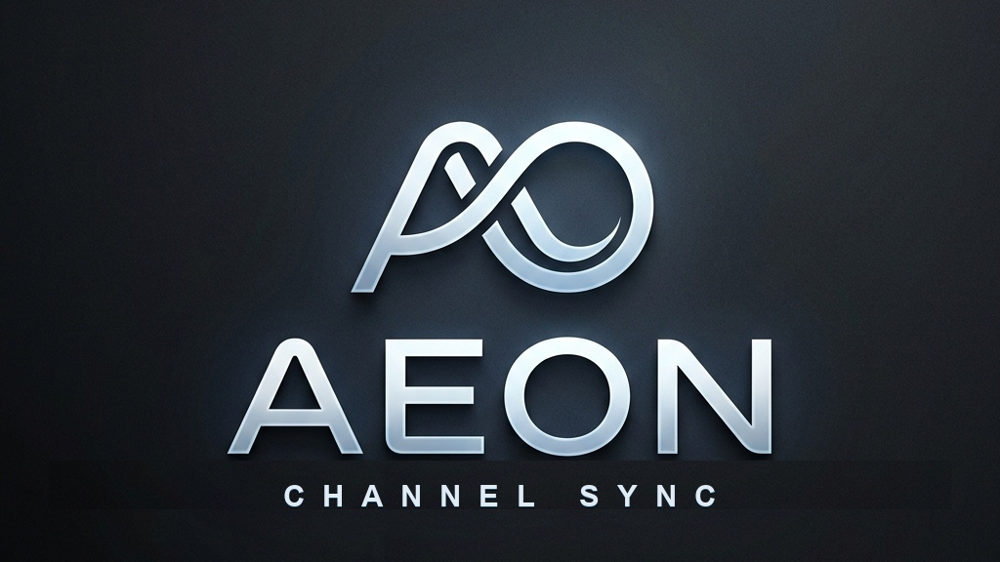
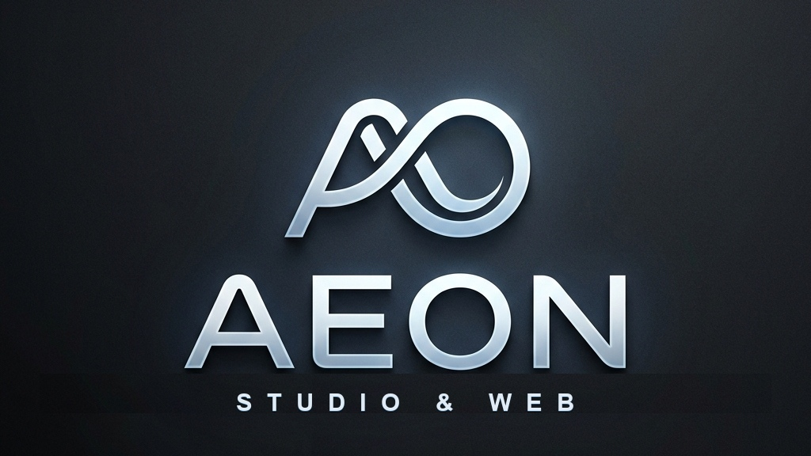
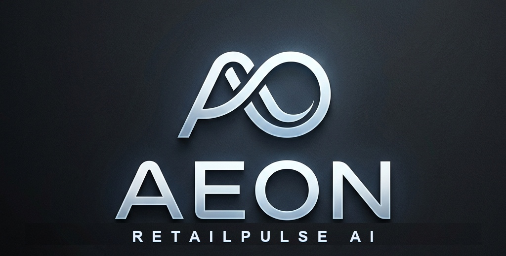
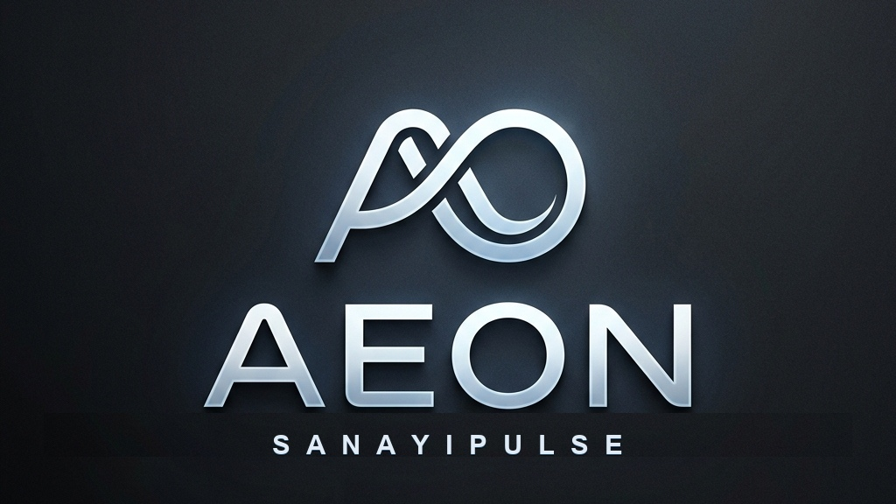

Salih Burkay Bozyel
Mobil Yazılım Geliştirici & Endüstri Müh. · Kurucu, AEON LLC
Flutter ve modern mobil teknolojilerle küresel uygulama mağazalarında (App Store & Google Play) canlı ürünler geliştiren mobil yazılım geliştirici ve kurucu. ESOGÜ Endüstri Mühendisliği altyapısını; yüksek performanslı çapraz platform mobil mimariler, ölçeklenebilir backend sistemleri ve uçta (edge) çalışan yapay zekâ çözümleri üretmek için kullanıyorum.
Biyografi & Yaşam Kültürü
DEHB'yi hiper-odaklama gücüne dönüştürme, Güneydoğu Asya dönemi ve çok yönlü üretim kültürü.
Kariyer & Eğitim Zaman Çizelgesi
AEON LLC kuruculuğu, ESOGÜ Endüstri Mühendisliği ve canlı SaaS/Edge AI sistem sorumlulukları.
Teknik Yetkinlik & Mimari Matris
Flutter, Node.js, YOLOv8, Cloudflare, Jetson ve kurumsal multi-tenant veri tabanları.
Canlı Demo, Ortaklık & İletişim
Venture Studio, Kurumsal Modernizasyon ve Stratejik Hisse Ortaklığı modelleri.
Biyografi, Yaşam Kültürü & Geçmiş
Merak ve hiper-odakla beslenen kişisel vizyon, çok kültürlü yaşam deneyimi ve kronolojik mühendislik sorumlulukları.
Salih Burkay Bozyel
Çocukluk yıllarımda konulan DEHB (ADHD) tanısını bir kısıt değil; zihinsel bir hiper-odaklanma gücü, tükenmeyen öğrenme açlığı ve araştırma motoru olarak benimsedim. Turistik bölgelerde büyümenin kazandırdığı doğal çift dillilik ve ileri seviye İngilizce altyapısıyla; dünya gündemini, modern yapay zekâyı, kuantum mekaniğini ve yeni nesil motor/tahrik teknolojilerini her gün bir önceki günden daha ileri taşımak üzere takip ediyorum.
Dünyayı, insan doğasını ve toplumları derinlemesine anlayabilmek adına 2 yılımı Güneydoğu Asya'da geçirdim. Lise yıllarından gelen analitik ve temel bilimler merakı, 3 yıllık lisanslı amatör basketbol disiplini, dünya mutfaklarına duyduğum gastronomi tutkusu, Anadolu rock ve elektronik müziğe olan ilgim kendime has çok katmanlı bir üretim kültürü oluşturdu. Hayatın getirdiği dönemsel engeller sebebiyle bir süre ara verdiğim ESOGÜ Endüstri Mühendisliği eğitimimde edindiğim süreç optimizasyonu ve yöneylem disiplinini geliştirdiğim tüm canlı yazılımlara aktararak aktif eğitim hayatıma geri döndüm.
Kurucu & Yazılım Geliştirici
AEON LLCButik otel ve restoranlar için modüler AEON Hospitality ERP'sinin mimarisini sıfırdan kurdu. Perakende ve sanayi sahaları için Nvidia Jetson tabanlı RetailPulse AI / SanayiPulse bilgisayarlı görü motorunu geliştirdi. Global mobil ekosistemde Vent (v3.0.5/3.0.6) ve Forge ürünlerinin teknik omurgasını yönetti.
- Node.js 20, Express, AlaSQL/SQLite ve Cloudflare D1 üzerinde çok kiracılı (multi-tenant) veri izolasyonu mimarisi kuruldu.
- HotelRunner API ile Booking.com ve Airbnb için çift yönlü gerçek zamanlı kanal senkronizasyonu entegre edildi.
- YOLOv8 + ByteTrack ile %100 yerel (on-prem) kamera analitiği ve 1.5m temas süresi korelasyon pipeline'ı kodlandı.
Eskişehir Osmangazi Üniversitesi (ESOGÜ)
Endüstri Mühendisliği Bölümü (Lisans Öğrencisi)Üretim ve hizmet süreçlerinin optimizasyonu, yöneylem araştırması, darboğaz analizi ve sistem dinamiği temelleri. Hayatın getirdiği dönemsel engeller sebebiyle bir süre ara verilmiş olsa da edinilen tüm analitik mühendislik disiplinleri canlı yazılım ve ERP sistemlerine fiilen uygulandı; eğitim hayatına aktif olarak devam etmektedir.
- Sistem analizi ve süreç iyileştirme prensiplerinin dijital ERP/SaaS platformlarına uyarlanması.
- Saha bilgisayarlı görü ve veri akışlarında operasyonel verimlilik ve kayıp/kaçak önleme modellemeleri.
Mustafa Kaynak Anadolu Lisesi
Sayısal Bölüm Mezuniyeti (2017)Sayısal bölüm eğitimi (Matematik & Fen Bilimleri). Temel fen bilimleri, analitik düşünme ve problem çözme altyapısı.
Bilgi & Yeterlilikler
Üretim kalitesinde kullanılan diller, çerçeveler, mimari desenler ve altyapı yetkinlikleri.
Mobil Uygulama
Flutter ile cross-platform uygulama mimarisi; App Store ve Google Play'de canlı ürünler.
Sunucu & Veri Tabanı
Multi-tenant servis mimarisi; gerçek zamanlı veri akışı ve bulut-kenar (edge) dağıtımı.
Yapay Görü & Edge AI
Nvidia Jetson üzerinde tamamen yerel çalışan bilgisayarlı görü pipeline'ları ve ses sentezi.
Veri & Güvenlik
KVKK/GDPR uyumlu, sıfır bulut bağımlılıklı veri işleme ve erişim kontrolü.
Web & Medya
Modern frontend mimarisi; tasarım sistemleri ve programatik video üretimi.
Entegrasyonlar & Yapay Zekâ
Harici servis entegrasyonları, LLM orkestrasyonu ve DevOps altyapısı.
Lüks butik oteller ve restoranlar için çok kiracılı (multi-tenant) rezervasyon, folio, QR sipariş ve mutfak koordinasyon (KDS) işletim sistemi. Node.js, Express, Cloudflare D1 ve SQLite mimarisi.
Nvidia Jetson üzerinde %100 yerel çalışan, video karelerini buluta göndermeden RAM'de işleyip silen (%100 KVKK/GDPR uyumlu) mağaza dönüşüm ve fabrika rampa izleme analitiği (YOLOv8, ByteTrack, RTSP).
Vent (v3.0.6 Canlı): 37 dilde çift rızalı anonim esenlik ağı (Flutter, IAP). Forge: Spor ve antrenman ağı. BOB: Sarcastic AI akıllı alarm. UNDRGRND: Bağımsız müzik ve sahne platformu.
Turnike geçişleri ile bilet okuma korelasyonu sağlayan kaçak biniş önleme sistemi ve Booking.com / Airbnb çift yönlü gerçek zamanlı oda/fiyat senkronizasyonu sağlayan OTA köprüsü.
Mobil Uygulamalar (Canlı & Geliştirilenler)
App Store ve Google Play'de küresel kullanıcıya ulaşan canlı ürünler ve yayına hazırlanan mobil topluluklar.

Vent: Duygusal Destek & Anonim İletişim Ağı
İnsanları profil fotoğrafları veya takipçi sayıları yerine konuşmak istedikleri spesifik duygu ve 222 konu başlığı üzerinden 1-e-1 anonim dertleşme odalarında buluşturan mobil uygulama. Sosyal medyanın dayattığı dış görünüş ve beğeni baskısını kaldırır; çift taraflı rıza ve otomatik sızıntı filtresiyle güvenli iletişim sağlar.

Forge: Sporcu Topluluğu & Antrenman Ağı
Sporcuların antrenman rekorlarını (PR), programlarını ve videolarını paylaştığı; harita üzerinden yakınındaki spor salonlarını ve seviyesine uygun antrenman partnerlerini bulduğu dikey sosyal ağ. Yalnız antrenman yapmaktan kaynaklanan motivasyon kaybını ve salonda partner bulma zorluğunu çözer.

BOB: Erteleme Karşıtı Alaycı Akıllı Alarm
Sabah alarmını sürekli erteleyen kullanıcıları standart melodiler yerine yapay zekâ destekli alaycı, sarkastik ve acımasız sesli uyarılarla (roast) yataktan kaldıran karakter tabanlı akıllı alarm. Gemini AI destekli dinamik mizah motoru ve Edge-TTS nöral ses senteziyle her sabah uykuyu psikolojik olarak böler ve erteleme refleksini kırar.

UNDRGRND: Bağımsız Müzik & Sahne Odaları
Beatmaker'lar ile bağımsız müzisyenlerin canlı odalarda sırayla ses kaydedip parçalar ürettiği dijital müzik platformu. Bağımsız müzisyenlerin stüdyo kiralama masrafı olmadan cep telefonu üzerinden serbest stil ve parça kaydetmesini sağlar.
ERP, CRM & Web Sistemleri
Butik oteller, restoranlar ve marinalar için geliştirilen uçtan uca dijital omurga ve lüks web vitrinleri.

AEON Hospitality Core ERP & POS
Lüks butik oteller ve restoranlar için rezervasyon, oda folyoları, plaj/şezlong QR menü siparişleri ve mutfak şef ekranını (KDS) tek merkezde birleştiren işletim sistemi. Departmanlar arası koordinasyon kopukluğunu bitirir; masadan verilen siparişlerin kaybolmasını ve tahsil edilmeyen servis kaçaklarını sıfırlar.

HotelRunner Çift Yönlü Kanal Entegrasyonu
Otelin yerel oda yönetim sistemi ile Booking.com, Airbnb ve Expedia arasında anlık çift yönlü veri köprüsü kurar. Misafiri kapıda bırakan çifte rezervasyon (overbooking) riskini, acente ceza puanlarını ve personelin saatler süren manuel veri giriş yükünü ortadan kaldırır.
Butik İşletme CRM & Satış Paneli
WhatsApp, telefon ve DM üzerinden gelen tüm konaklama ve özel etkinlik taleplerini aşamalı bir satış hunisinde (pipeline) toplayan müşteri ilişkileri platformu. Personelin yoğunlukta unuttuğu yüksek değerli misafir taleplerini ve fiyat tutarsızlıklarını önleyerek doğrudan satış kapanış oranını artırır.

Lüks Butik Otel & Marina Web Portalları
Seçkin kıyı otelleri ve marinalar için tasarlanan yüksek hızlı editoryal vitrin ve doğrudan rezervasyon motoru. Acentelere ödenen %15-%25 komisyon kesintilerini ortadan kaldırır ve üst segment misafire hitap eden prestijli marka kimliğini tesis eder.
Edge AI & Kamera Analitiği
Mevcut güvenlik kameralarını buluta bağımlı kalmadan; perakende dönüşüm, fabrika lojistiği ve eğlence parkı analitik merkezine dönüştüren yapay zekâ hattı.

RetailPulse AI: Perakende Davranış Analitiği
Mağazadaki mevcut tavan kameralarından müşteri trafiğini ve reyon önü bekleme sürelerini ölçen, POS kasa fişleriyle eşleştirerek gerçek satışa dönüşüm oranını (% Conversion) hesaplayan yerel bilgisayarlı görü motoru. Görüntüleri buluta aktarmadan RAM üzerinde işleyip silerek %100 KVKK güvencesi sağlar.

SanayiPulse: Fabrika & Rampa Lojistiği
Ağır sanayi tesisleri ve yükleme rampalarında TIR giriş-çıkış sürelerini, rampa doluluklarını ve İSG güvenlik koridorlarını 7/24 izleyen endüstriyel görü sistemi. TIR bekleme sürelerinden doğan lojistik gecikme (demurrage) cezalarını ve fabrika içi forklift kazalarını önler.
PassAudit OS: Turnike & Kaçak Biniş Denetimi
Eğlence ve ulaşım tesislerinde turnikeden okutulan bilet sayısı ile kameranın tespit ettiği gerçek biniş sayısını anlık olarak karşılaştıran denetim paneli. Bilet basmadan turnikeden atlayan veya usulsüz geçen binişleri anında yakalayarak her gün uğranılan ciddi bilet geliri sızıntısını durdurur.
Uçta Donanım Mimarisi & %100 KVKK Güvencesi
Video akışları internete veya üçüncü taraf bulut sağlayıcılarına asla iletilmez. Tüm tespitler yerel Nvidia Jetson Orin veya endüstriyel Mini PC ünitelerinde RAM üzerinde işlenir ve ham kareler analiz bittiği milisaniyede silinir. Merkeze yalnızca anonim JSON telemetri verisi akar.
Ekstralar: Makaleler, Yazılar & Ar-Ge
Mimari araştırma raporları, kod tabanlı video otomasyonu ve animasyon dizisi senaryo tasarımı.
Bilimsel Makaleler & Felsefi İncelemeler
Matematik felsefesi, kuantum ölçüm problemi, görelilik ve zamanın döngüselliği üzerine kaleme alınmış kapsamlı araştırma metinleri.
CreativePulse: React Tabanlı Otomatize Video Motoru
Video kurgu programı açmadan React bileşenleri ve Python betikleriyle dinamik fiyatlı kampanya videolarını ve hikayeleri saniyeler içinde render eden otomasyon motoru. Tasarımcılara ödenen yüksek ajans maliyetlerini ve saatler süren manuel montaj yükünü sıfırlar.
Özel MCP Sunucuları & Otonom Ajan Hattı
Claude ve DeepSeek büyük dil modellerini güvenli yerel köprülerle şirket içi veritabanlarına bağlayan Model Context Protocol (MCP) sunucuları. Ajanların kod tabanlarını bağımsız denetlemesini ve iş akışlarını yürütmesini sağlayan protokol mimarisi.
Canlı Demo ve Ortaklık Görüşmesi İçin İletişime Geçin
Görüşmede doğrudan canlı projeler (Vent App, AEON ERP, RetailPulse AI) üzerinden sistem mimarilerini canlı demo yapmaya hazırım.